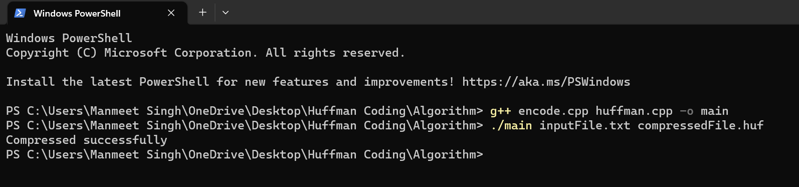
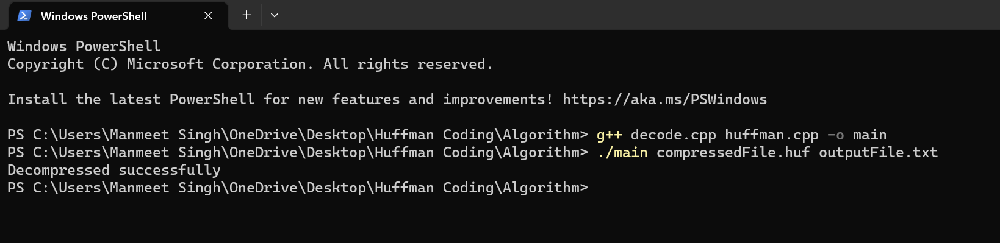

Introduction
Huffman coding is a widely used data compression algorithm that enables efficient representation of data using variable-length codes. It was developed by David A. Huffman in 1952 while he was a graduate student at MIT. The main goal of Huffman coding is to reduce the number of bits needed to represent data, thus achieving compression. The algorithm works by assigning shorter codes to more frequently occurring symbols or characters in the data and longer codes to less frequent symbols. This creates a variable-length prefix code, where no code is a prefix of another code, ensuring that the codes can be uniquely deciphered.
How It Works
The steps involved in the Huffman coding algorithm are as follows:
- Frequency Count: The algorithm starts by analyzing the input data and counting the frequency of occurrence of each symbol or character.
- Create Huffman Tree: The symbols are then organized into a binary tree, called the Huffman tree. Initially, each symbol is treated as a separate tree with its frequency as the weight. The two trees with the lowest frequencies are combined to form a new tree, and this process is repeated until all the symbols are part of the tree.
- Assign Codes: Traverse the Huffman tree to assign codes to each symbol. The codes are generated by assigning a 0 to each left branch and a 1 to each right branch as you move from the root to a specific symbol in the tree.
- Encoding: Replace each symbol in the input data with its corresponding Huffman code. The resulting binary string is the compressed representation of the input data. repeated until all the symbols are part of the tree.
- Decoding: To decompress the data, use the same Huffman tree used for encoding to map the Huffman codes back to their original symbols.
How To Run
- For Compressing: 
- For Decompressing: 
Example:inputFile.txt (1.81 MB) is compressed to compressedFile.huf (982 KB) file and decompressed back to ouputFile.txt (1.81 MB).
Result:This project is just an implementation of Huffman coding, it is not as efficient as the compression algorithm used currently to compress files.